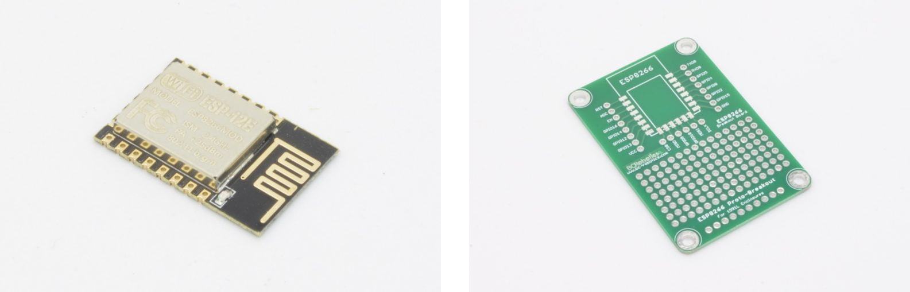
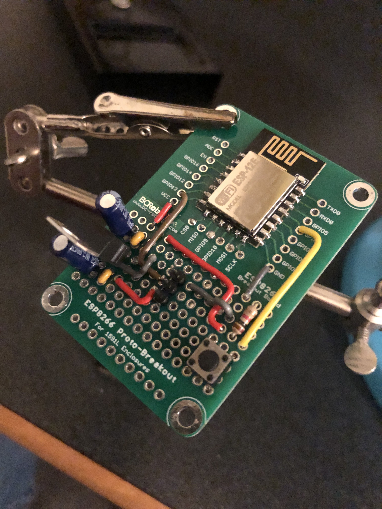

Late one night, in a procrastination-fueled productivity burst, I decided that I wanted to connect something physical to the internet. While a door that automatically opens when I get close would be cool, I didn't feel like introducing a software vulnerability to where I sleep. So calling on a recent memory of my friend telling me "your dorm room light is always on" I decided to hook up my light switch to the internet, so I could turn it off anywhere.
Arguably, it makes a lot more sense to just build turning off my lights into a habit and not wake up so close to when I need to leave, so I don't forget to do it - which I happened to do as I was building this project, rendering it useless. I won't always have a janky wall mounted servo hooked into a web service, unfortunately.
But why spend 5 minutes doing something myself, when I could automate it in 5 hours?
So I went on to BC Robotics' website and searched through their IoT section. I had my eye on the ESP32 because of it's Bluetooth capabilities originally, but I found an ESP8266 surface mount module for half the price. Plus they had a little proto-board for it!

I needed a non-destructive way to actuate the switch. I spent a little time thinking and searching online and came across some 3D models for mounting a panel with a servo to a light switch. Based on their designs I designed a super simple mount to fit the screws on the switch's mounting plate and sent it off to my 3D printer. A few days later I got the board in the mail. I set up some simple supporting circuitry on the proto board, so I could power it on and connect a servo to it. I added a 3.3 V linear regulator, a button connected to one of the GPIO, and a header for the servo to actuate the switch.
The button is for when I'm physically there, which flips the current state of the light switch, and the servo is connected directly to the USB 5 V rail.

I had a USB to UART converter handy, so it wasn't too bad to program the ESP8266. I also found Adafruit IO as a really easy way to connect my board to the internet.
At least... that's what I thought.
I was visiting my parents place over reading break, which was when I did most of the programming. I attached the setup to a light at home and tested that the servo and arm could actuate the switch, and that I could control it through the Adafruit IO webpage. Everything seemed to work, and I was excited to take it back to university!

Not pictured is the USB cable used for power.
Unfortunately, when I got back to university, it turns out that I couldn't connect the ESP8266 to the campus Wi-Fi :(
Since I was using the Arduino IDE and the ESP8266 doesn't seem to support WPA2 Enterprise natively, I was stuck. Knowing what I know about networking now, I think that I could have managed to implement a workaround, but at the time I was too busy with school to really sit down with it and create an actual fix. So instead I made the ESP8266 a wireless access point, which unfortunately meant no controlling of the light anywhere, but at least it was working.
By the time I got this working though, I hadn't left my lights on when I was out once. So the only time the project really got used was to show my friends that I could actually control my light from outside my dorm.